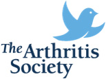

Informational Links

The following links will provide you with more information about your osteoarthritis

The Arthritis Society (http://www.arthritis.ca/)
The Arthritis Society has been setting lives in motion for over 65 years, and is dedicated to a vision of living well while creating a future without arthritis. Founded in British Columbia in 1948 by Mary Pack and Dr. Wallace Graham, The Society is Canada’s principal health charity providing education, programs and support to the over 4.6 million Canadians living with arthritis
The Canadian Orthopaedic Association (http://www.coa-aco.org/)
The Canadian Orthopaedic Association maintains close ties with the Royal College of physicians and surgeons of Canada. Responsible for training, education and qualification of orthopaedic. Their website includes patient educational resources and a database that provides up-to-date information to assist patients in finding an appropriate orthopaedic surgeon in Canada.
American College of Rheumatology (https://www.rheumatology.org/default.aspx)
The American College of Rheumatology's mission is advancing rheumatology. The organization represents over 9,400 rheumatologists and rheumatology health professionals around the world. The ACR offers its members the support they need to ensure that they are able to continue their innovative work by providing programs of education, research, advocacy, and practice support.
Knee1.com (http://knee1.com/)
Comprehensive Knee Information, Videos, & Forums covering Knee Injury, Rehabilitation, Pain Management, Artificial Knees, Ligament Repair, & Knee Care
American College of Sports Medicine (http://www.acsm.org/)
ACSM is the largest sports medicine and exercise science organization in the world. With more than 50,000 members and certified professionals worldwide, ACSM is dedicated to advancing and integrating scientific research to provide educational and practical applications of exercise science and sports medicine.
The Pediatric Orthopaedic Society of North America (http://www.posna.org/)
The Pediatric Orthopaedic Society of North America (POSNA) is a non-profit professional organization of over 1100 surgeons, physicians, and allied health members passionately dedicated to advancing musculoskeletal care for children and adolescents through education; research; quality, safety and value initiatives; advocacy and global outreach to children in underserved areas. On their site you will find links to expert descriptions of pediatric orthopaedic conditions and their treatments, as well as information about POSNA's educational and scientific events, advocacy, philanthropy and service.
If you have not already taken your Self-assessment, we strongly suggest you take the assessment and register to become a member of “OA Management Club”
To join the “OA Management Club”